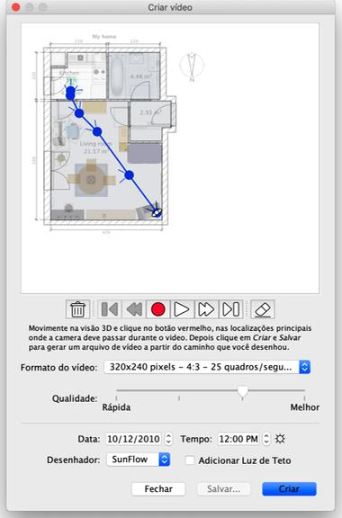

|
|
Criando videos | ||
|
Para criar um v�deo 3D de sua casa, selecione a visualiza��o em 3D > Criar v�deo... ou clique na ferramenta Criar v�deo.
Isto ir� mostrar uma caixa de di�logo semelhante ao dedicado � cria��o de fotos. 
No topo deste painel, aparece o plano de sua casa sobre a qual o caminho virtual da
c�mera de v�deo ser� desenhado. Abaixo do plano, os bot�es de grava��o, reprodu��o
ajudar� voc� a registrar os pontos do caminho que a camera dever� passar ou retirar
alguns pontos do caminho.
Para criar um v�deo, escolha a localiza��o inicial da c�mera de v�deo na visualiza��o
em 3D na janela principal do Sweet Home 3D e clique no bot�o vermelho no painel de
cria��o de v�deo. Em seguida, mover a visualiza��o em 3D para o pr�ximo local da
c�mera de v�deo e clique novamente no bot�o vermelho. Repita essas etapas para cada
local que a c�mera deve passar durante o v�deo. |
|